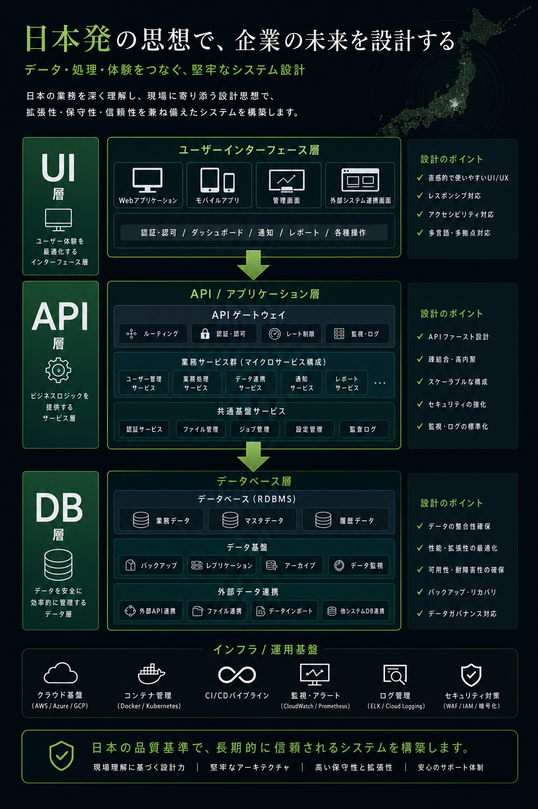

AiDiy では業務語彙と実装名をできるだけ一致させ、日本語話者がコードと画面を直接対応づけられるようにしています。
画面、URL、JSON キー、識別子は日本語を原則とする。
DB 項目名、API 項目名、フロントエンド変数名はできるだけ一致させる。
HowTo や検証手順は AGENTS.md ではなく .aidiy/knowledge に置く。
全レイヤーで日本語識別子を使います。Database / API / Frontend / Code の例が明示されています。
日本語ファイル名、日本語 route、日本語 JSON key を使う。template の component tag は ASCII にする。